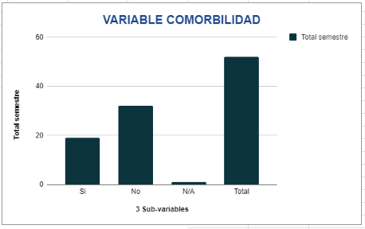

| FACTOR | Total semestre | Total % |
|---|---|---|
| Si | 22 | 42.31% |
| No | 28 | 53.85% |
| N/A | 2 | 3.85% |
| Total | 52 | 100% |
| FACTOR | Total Semestre | Total % |
|---|---|---|
| Si | 8 | 15.38% |
| Si, temporal | 1 | 1.92% |
| No | 25 | 48.08% |
| N/A | 18 | 34.62% |
| Total | 52 | 100% |
| FACTOR | Total semestre | Total semestre % |
|---|---|---|
| Medimas | 5 | 9.62% |
| Nueva EPS | 30 | 57.69% |
| Salud Total | 12 | 23.08% |
| Sisben | 1 | 1.92% |
| Asmetsalud | 0 | 0% |
| ARL | 1 | 1.92% |
| Emmsanar | 0 | 0% |
| Policía | 1 | 1.92% |
| Sanidad Militar | 0 | 0% |
| Salud Vida | 0 | 0% |
| Sanitas | 0 | 0% |
| Sura | 0 | 0% |
| SOAT | 0 | 0% |
| Particular | 0 | 0% |
| N/A | 2 | 3.85% |
| Total | 52 | 100% |
En la variable Comorbilidad, la población atendida en consulta externa muestra una mayor proporción de pacientes con comorbilidades, lo que podría indicar la necesidad de un enfoque más integral en la atención de estas condiciones.
En la variable Movilidad Reducida, una parte significativa de la población presenta movilidad reducida, lo que sugiere que las intervenciones deben considerar las limitaciones físicas al proporcionar atención.
En la variable EPS, la mayor parte de la población atendida está afiliada a Nueva EPS, lo cual refleja una predominancia de esta entidad en el acceso a servicios de salud para los pacientes de consulta externa.
